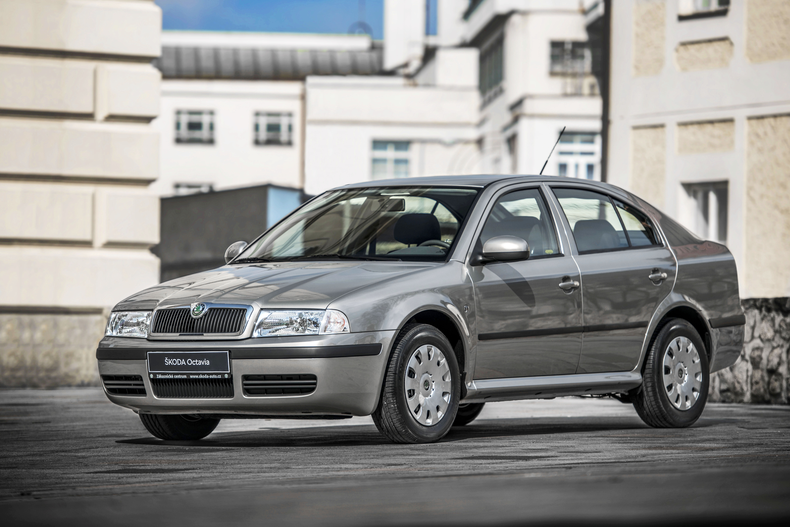

Škoda Octavia

Škoda Octavia je velmi oblíbené rodinné auto vyráběné od roku 1996.
Díky velkému kufru, pohodlí a široké nabídce motorů je vhodná jak
pro každodenní ježdění, tak i na delší cesty. Často se doporučuje
jako první auto pro ty, kteří chtějí více prostoru a komfortu.
V čem je auto dobré
- velký kufr
- pohodlné na dlouhé cesty
- dostupné náhradní díly
- široká nabídka motorů
- relativně spolehlivé
Benzínové motory
- 1.4 – 44 kW, 55 kW
- 1.6 – 55 kW, 74 kW
- 1.8 – 92 kW
- 1.8T – 110 kW, 132 kW
- 2.0 – 85 kW
Naftové motory
- 1.9 SDI – 50 kW
- 1.9 TDI – 66 kW, 81 kW, 96 kW
← Zpět na hlavní stránku